class: center, middle # Natural Language Processing with Deep Learning Charles Ollion - Olivier Grisel .affiliations[    ] --- ## Natural Language Processing .center[ 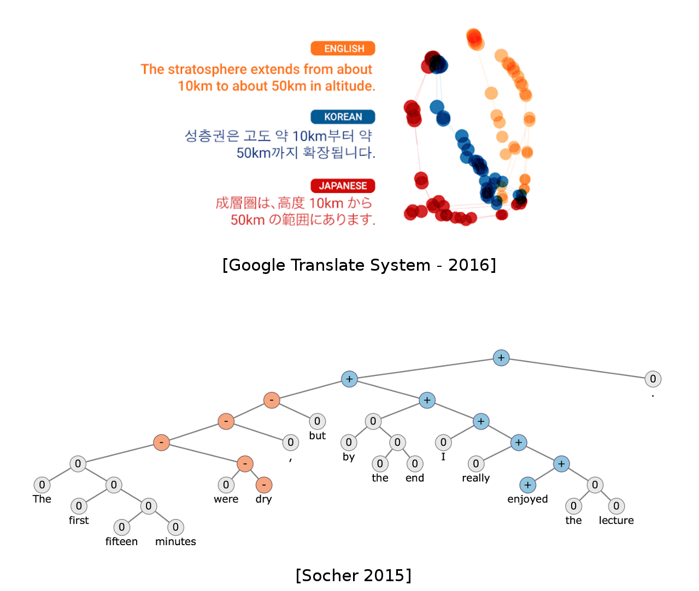 ] --- ## Natural Language Processing - Topic Classification - Topic modeling - Sentiment Analysis -- - Google Translate -- - Chatbots / dialogue systems -- - Natural language query understanding (Google Now, Apple Siri, Amazon Alexa) -- - Summarization --- # Recommended reading *A Primer on Neural Network Models for Natural Language Processing* by Yoav Goldberg .center[ http://u.cs.biu.ac.il/~yogo/nnlp.pdf ] --- # Outline <br/> ### Word representation and Word2Vec -- ### Recurrent Neural Networks and Language Modelling -- ### Encoder-Decoder and Attention Mechanism --- class: middle, center # Word Representation and Word2Vec --- # Word representation Words are indexed and represented as 1-hot vectors -- Large Vocabulary of possible words $|V|$ -- Use of **Embeddings** as inputs in all Deep NLP tasks -- Word embeddings usually have dimensions 50, 100, 200, 300 --- # Supervised Text Classification .center[ 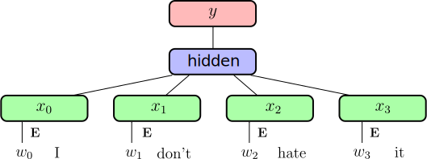 ] .footnote.small[ Joulin, Armand, et al. "Bag of tricks for efficient text classification." FAIR 2016 ] ??? Question: shape of embeddings if hidden size is H -- $\mathbf{E}$ embedding (linear projection) .right.red[`|V| x H`] -- Embeddings are averaged .right[hidden activation size: .red[`H`]] -- Dense output connection $\mathbf{W}, \mathbf{b}$ .right.red[`H x K`] -- Softmax and **cross-entropy** loss --- # Supervised Text Classification .center[ ] .footnote.small[ Joulin, Armand, et al. "Bag of tricks for efficient text classification." FAIR 2016 ] <br/> - Very efficient (**speed** and **accuracy**) on large datasets -- - State-of-the-art (or close to) on several classification, when adding **bigrams/trigrams** -- - Little gains from depth --- # Transfer Learning for Text Similar to image: can we have word representations that are generic enough to **transfer** from one task to another? -- **Unsupervised / self-supervised** learning of word representations -- **Unlabelled** text data is almost infinite: - Wikipedia dumps - Project Gutenberg - Social Networks - Common Crawl --- # Word Vectors .center[ 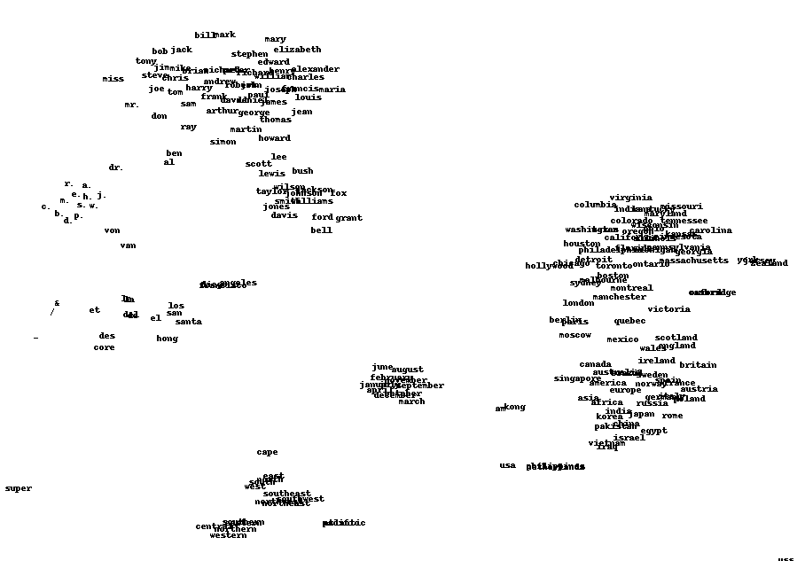 ] .footnote.small[ excerpt from work by J. Turian on a model trained by R. Collobert et al. 2008 ] ??? Question: what distance to use in such a space --- # Word2Vec .center[ 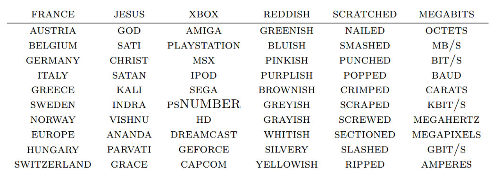 ] .footnote.small[ Colobert et al. 2011, Mikolov, et al. 2013 ] -- <br/> ### Compositionality .center[ <img src="images/sum_wv.png" style="width: 700px;" /> ] --- # Word Analogies .center[ <img src="images/capitals.png" style="width: 450px;" /> ] .footnote.small[ Mikolov, Tomas, et al. "Distributed representations of words and phrases and their compositionality." NIPS 2013 ] -- - Linear relations in Word2Vec embeddings -- - Many come from text structure (e.g. Wikipedia) --- # Self-supervised training Distributional Hypothesis (Harris, 1954): *“words are characterised by the company that they keep”* Main idea: learning word embeddings by **predicting word contexts** .footnote.small[ Mikolov, Tomas, et al. "Distributed representations of words and phrases and their compositionality." NIPS 2013 ] -- Given a word e.g. “carrot” and any other word $w \in V$ predict probability $P(w|\text{carrot})$ that $w$ occurs in the context of “carrot”. -- - **Unsupervised / self-supervised**: no need for class labels. - (Self-)supervision comes from **context**. - Requires a lot of text data to cover rare words correctly. ??? How to train fastText like model on this? --- # Word2Vec: CBoW CBoW: representing the context as **Continuous Bag-of-Word** Self-supervision from large unlabeled corpus of text: *slide* over an **anchor word** and its **context**: .center[ <img src="images/words.svg" style="width: 500px;" /> ] .footnote.small[ Mikolov, Tomas, et al. "Distributed representations of words and phrases and their compositionality." NIPS 2013 ] --- # Word2Vec: CBoW CBoW: representing the context as **Continuous Bag-of-Word** Self-supervision from large unlabeled corpus of text: *slide* over an **anchor word** and its **context**: .center[ 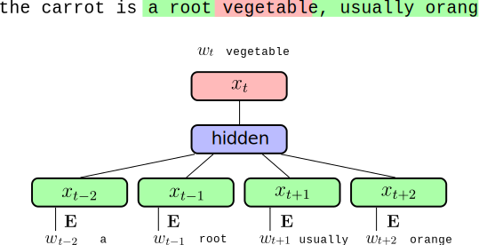 ] .footnote.small[ Mikolov, Tomas, et al. "Distributed representations of words and phrases and their compositionality." NIPS 2013 ] ??? Question: dim of output embedding vs dim of input embedding --- # Word2Vec: Details <br/> .center[ 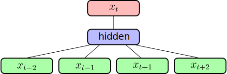 ] .footnote.small[ Mikolov, Tomas, et al. "Distributed representations of words and phrases and their compositionality." NIPS 2013 ] - Similar as supervised CBoW (e.g. fastText) with |V| classes -- - Use **Negative Sampling**: Sample *negative* words at random instead of computing the full softmax. See: <small> http://sebastianruder.com/word-embeddings-softmax/index.html</small> -- - Large impact of **context size** --- # Word2Vec: Skip Gram <br/> .center[ <img src="images/word2vec_skipgram.svg" style="width: 500px;" /> ] <br/> - Given a word, predict context probabilities -- - Widely used in practice --- # Evaluation and Related methods Always difficult to evaluate unsupervised tasks - WordSim (Finkelstein et al.) - SimLex-999 (Hill et al.) - Word Analogies (Mikolov et al.) -- <br/> Other popular method: **GloVe** (Socher et al.) http://nlp.stanford.edu/projects/glove/ .footnote.small[ Pennington, Jeffrey, Richard Socher, and Christopher D. Manning. "Glove: Global Vectors for Word Representation." EMNLP. 2014 ] --- # Take Away on Embeddings **For text applications, inputs of Neural Networks are Embeddings** -- - If you have **little training data**, or wide vocabulary not covered by data, use **pre-trained self-supervised embeddings** (transfer learning from Glove, word2vec or fastText embeddings) -- - For **large training data** with labels, learn task-specific embedding with methods such as **fastText in supervised mode**. -- - These methods use **Bag-of-Words** (BoW): they **ignore the order** in word sequences -- - Deep Learning is not that useful for simple BoW text classification. -- **Deep Learning in NLP** is less mature than for other domains such as computer vision and speech recognition. --- class:middle, center # Recurrent Neural Networks and Language Modelling --- # Language Models Assign a probability to a sequence of words, e.g: - $p(\text{"I like cats"}) > p(\text{"I table cats"})$ - $p(\text{"I like cats"}) > p(\text{"like I cats"})$ -- **Sequence modelling** $$ p\_{\theta}(w\_n | w\_{n-1}, w\_{n-2}, \ldots, w\_0) \cdot p\_{\theta}(w\_{n-1} | w\_{n-2}, \ldots, w\_0) \cdot \ldots \cdot p\_{\theta}(w\_{0}) $$ -- $p\_{\theta}$ is parameterized by a neural network. -- The internal representation of the model has to better capture the meaning of a sequence than a simple Bag-of-Words. Much more computationally expensive than Bag-of-Words models. --- # Conditional Language Models NLP problems expressed as **Conditional Language Models**: **Translation:** $p(Target | Source)$ - *Source*: "J'aime les chats" - *Target*: "I like cats" ??? Question: do you have any idea of those NLP tasks that could be tackled with a similar conditional modeling approach? -- **Question Answering / Dialogue:** $p( Answer | Question , Context )$ - *Context*: "John put 2 glasses on the table. Bob adds two more glasses" - *Question*: "How many glasses are there?" - *Answer*: "There are four glasses." -- **Image Captionning:** $p( Caption | Image )$ --- ## Fixed sequence size .center[ 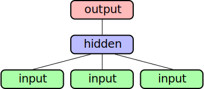 ] -- Fixed context size - **Average embeddings**: (same as CBoW) no sequence information -- - **Concatenate embeddings**: introduces many parameters -- - **1D convolution**: larger contexts and limit number of parameters -- - Still does not take well into account varying sequence sizes and sequence dependencies ??? Question: What's the dimension of concatenate embeddings? --- ## Recurrent Neural Network .center[ 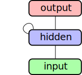 ] -- Unroll over a sequence $(x_0, x_1, x_2)$: .center[ <img src="images/unrolled_rnn_3.svg" style="width: 400px;" /> ] --- ## Recurrent Neural Network .center[ ] Unroll over a sequence $(x_0, x_1, x_2)$: .center[ <img src="images/unrolled_rnn_2.svg" style="width: 400px;" /> ] --- ## Recurrent Neural Network .center[ ] Unroll over a sequence $(x_0, x_1, x_2)$: .center[ 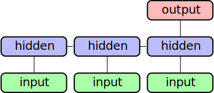 ] --- ## Language Modelling .center[ 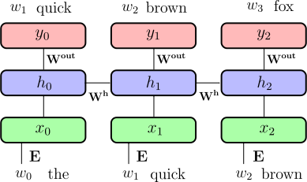 ] **input** $(w\_0, w\_1, ..., w\_t)$ .small[ sequence of words ( 1-hot encoded ) ] <br/> **output** $(w\_1, w\_2, ..., w\_{t+1})$ .small[shifted sequence of words ( 1-hot encoded ) ] --- ## Language Modelling .center[ ] $x\_t = \text{Emb}(w\_t) = \mathbf{E} w\_t$ .right[input projection .red[`H`]] -- $h\_t = g(\mathbf{W^h} h\_{t-1} + x\_t + b^h)$ .right[recurrent connection .red[`H`]] -- $y = \text{softmax}( \mathbf{W^o} h\_t + b^o )$ .right[output projection .red[`K = |V|`]] --- ## Recurrent Neural Network .center[ ] Input embedding $\mathbf{E}$ .right[.red[`|V| x H`]] -- Recurrent weights $\mathbf{W^h}$ .right[.red[`H x H`]] -- Output weights $\mathbf{W^{out}}$ .right[ .red[`H x K = H x |V|`]] --- ## Backpropagation through time Similar as standard backpropagation on unrolled network .center[ <img src="images/unrolled_rnn_backwards_1.svg" style="width: 400px;" /> ] --- ## Backpropagation through time Similar as standard backpropagation on unrolled network .center[ <img src="images/unrolled_rnn_backwards_2.svg" style="width: 400px;" /> ] --- ## Backpropagation through time Similar as standard backpropagation on unrolled network .center[ <img src="images/unrolled_rnn_backwards_3.svg" style="width: 400px;" /> ] <br/> -- - Similar as training **very deep networks** with tied parameters - Example between $x_0$ and $y_2$: $W^h$ is used twice -- - Usually truncate the backprop after $T$ timesteps -- - Difficulties to train long-term dependencies --- ## Other uses: Sentiment Analysis .center[ <img src="images/unrolled_rnn_one_output_2.svg" style="width: 600px;" /> ] - Output is sentiment (1 for positive, 0 for negative) -- - Very dependent on words order -- - Very flexible network architectures --- ## Other uses: Sentiment analysis .center[ <img src="images/unrolled_rnn_one_output.svg" style="width: 600px;" /> ] - Output is sentiment (1 for positive, 0 for negative) - Very dependent on words order - Very flexible network architectures --- # LSTM .center[ 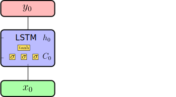 ] .footnote.small[ Hochreiter, Sepp, and Jürgen Schmidhuber. "Long short-term memory." Neural computation 1997 ] --- # LSTM .center[ 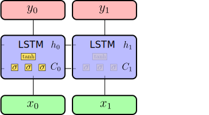 ] .footnote.small[ Hochreiter, Sepp, and Jürgen Schmidhuber. "Long short-term memory." Neural computation 1997 ] --- # LSTM .center[ 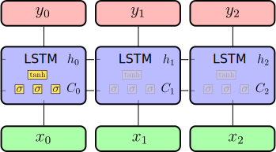 ] .footnote.small[ Hochreiter, Sepp, and Jürgen Schmidhuber. "Long short-term memory." Neural computation 1997 ] -- - 4 times more parameters than RNN -- - Mitigates **vanishing gradient** problem through **gating** -- - Widely used and SOTA in many sequence learning problems --- .footnote.small[ Hochreiter, Sepp, and Jürgen Schmidhuber. "Long short-term memory." Neural computation 1997 ] $\mathbf{ u} = \sigma(\mathbf{W^u} \cdot h\_{t-1} + \mathbf{I^u} \cdot x\_t + b^u)$ .right[Update gate .red[`H`]] -- $\mathbf{ f} = \sigma(\mathbf{W^f} \cdot h\_{t-1} + \mathbf{I^f} \cdot x\_t + b^f)$ .right[Forget gate .red[`H`]] -- $\mathbf{ \tilde{C}} = \tanh(\mathbf{W^c} \cdot h\_{t-1} + \mathbf{I^c} \cdot x\_t + b^c)$ .right[Cell candidate .red[`H`]] -- $\mathbf{ C\_t} = \mathbf{f} \odot \mathbf{C\_{t-1}} + \mathbf{u} \odot \mathbf{ \tilde{C}}$ .right[Cell output .red[`H`]] -- $\mathbf{ o} = \sigma(\mathbf{W^o} \cdot h\_{t-1} + \mathbf{I^o} \cdot x\_t + b^o)$ .right[Output gate .red[`H`]] -- $\mathbf{ h\_t} = \mathbf{o} \odot \tanh(\mathbf{C\_t})$ .right[Hidden output .red[`H`]] -- $y = \text{softmax}( \mathbf{W} \cdot h\_t + b )$ .right[Output .red[`K`]] -- <br/> $W^u, W^f, W^c, W^o$ .right[Recurrent weights .red[`H x H`]] $I^u, I^f, I^c, I^o$ .right[Input weights .red[`N x H`]] --- # GRU Gated Recurrent Unit: similar idea as LSTM .footnote.small[ Chung, Junyoung, et al. "Gated Feedback Recurrent Neural Networks." ICML 2015 ] - less parameters, as there is one gate less - no "cell", only hidden vector $h_t$ is passed to next unit -- In practice - more recent, people tend to use LSTM more - no systematic difference between the two --- ## Vanishing / Exploding Gradients Passing through $t$ time-steps, the resulting gradient is the **product** of many gradients and activations -- - Gradients close to $0$ will soon be $0$ - Gradients larger than $1$ will explode -- <br/> - **LSTM / GRU** mitigate that in RNNs -- - **Gradient clipping** prevents gradient explosion - Well chosen **activation function** is critical (tanh) -- <br/> **Skip connections** in ResNet also alleviate this problem --- class: center,middle # Encoder-Decoder and Attention Mechanism --- # Encoder-Decoder .center[ <img src="images/encoder_decoder_1.svg" style="width: 680px;" /> ] .footnote.small[ Cho, Kyunghyun, et al. "Learning phrase representations using RNN encoder-decoder for statistical machine translation." 2014 ] --- # Encoder-Decoder .center[ <img src="images/encoder_decoder_2.svg" style="width: 680px;" /> ] .footnote.small[ Cho, Kyunghyun, et al. "Learning phrase representations using RNN encoder-decoder for statistical machine translation." 2014 ] --- # Encoder-Decoder .center[ 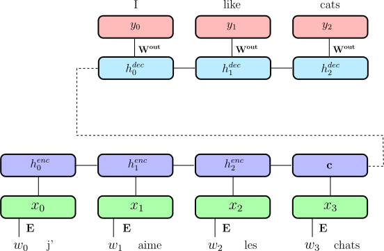 ] .footnote.small[ Cho, Kyunghyun, et al. "Learning phrase representations using RNN encoder-decoder for statistical machine translation." 2014 ] --- # Encoder-Decoder .center[ 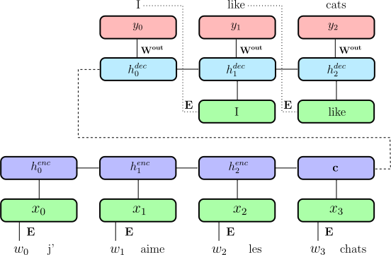 ] .footnote.small[ Cho, Kyunghyun, et al. "Learning phrase representations using RNN encoder-decoder for statistical machine translation." 2014 ] --- # Sequence to Sequence .center[ <img src="images/basic_seq2seq.png" style="width: 760px;" /> ] .footnote.small[ Sutskever, Ilya, Oriol Vinyals, and Quoc V. Le. "Sequence to sequence learning with neural networks." NIPS 2014 ] - Encoder-Decoder architecture -- - **Reverse input sequence** for translation - Special symbols for starting decoding and end of sentence -- - Encoder and decoder can **share weights** (but more common to have separate weights) --- # Attention Mechanism Main problem with Encoder-Decoder: - A sentence may have different parts with different concepts - The **whole sentence** is represented as a **single vector** .center[ *I like cats but I don't like dogs* ] .footnote.small[ In depth explanation on https://blog.heuritech.com/2016/01/20/attention-mechanism/ ] -- <br/> Solution: - Use all outputs of the encoder $\{h_i\}$ to compute the outputs - Build an **Attention Mechanism** to determine which output(s) to attend to --- # Attention Mechanism .center[ <img src="images/attention_0.png" style="width: 670px;" /> ] .footnote.small[ Neural machine translation by jointly learning to align and translate, D Bahdanau, K Cho, Y Bengio 2014 ] --- # Attention Mechanism .center[ <img src="images/attention_1.png" style="width: 670px;" /> ] .footnote.small[ Neural machine translation by jointly learning to align and translate, D Bahdanau, K Cho, Y Bengio 2014 ] --- # Attention Mechanism .center[ 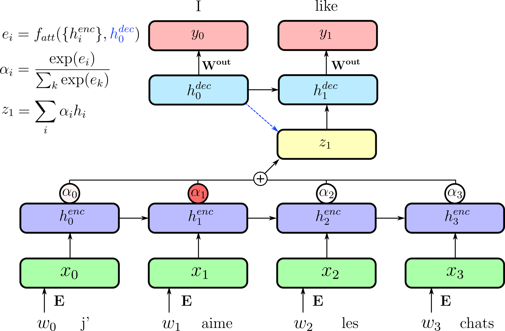 ] .footnote.small[ Neural machine translation by jointly learning to align and translate, D Bahdanau, K Cho, Y Bengio 2014 ] --- # Attention Mechanism .center[ 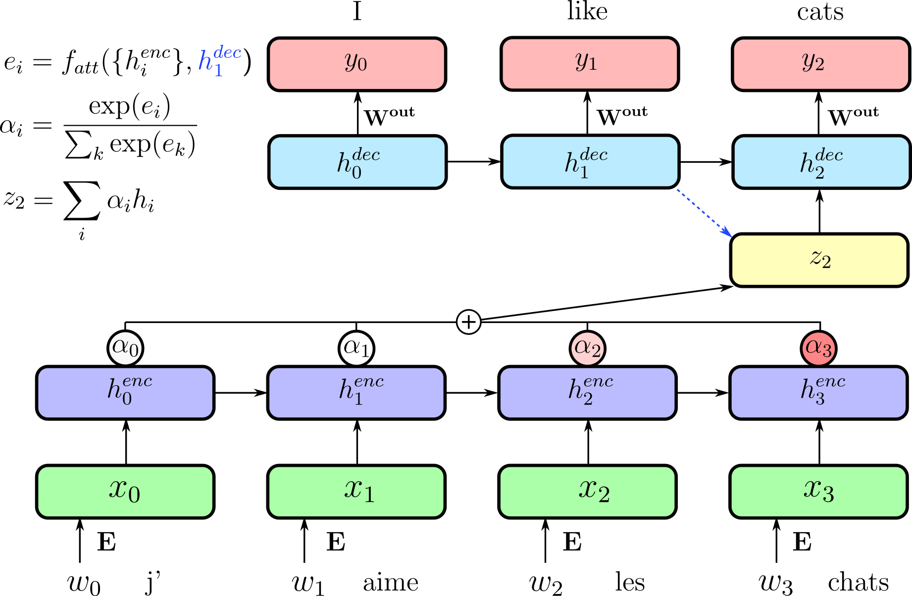 ] .footnote.small[ Neural machine translation by jointly learning to align and translate, D Bahdanau, K Cho, Y Bengio 2014 ] --- # Large Vocabulary Size **Softmax** computation becomes **intractable** both at training and inference time (sum over $|V|$). -- **Negative Sampling** works well to learn word embeddings but is **not a good approximation** for **language modeling** and machine translation. -- Approximate softmax with **sampled softmax** (a.k.a. bucketing): - Accumulate train sequences in buckets $i \in B$ with $|V_i| ~= 50k$; - Sample bucket $i$ at random and train with regular softmax on $V_i$; - Share softmax parameters for words in common across buckets; - Iterate untill the end of the training set. ??? Sampled softmax (https://arxiv.org/abs/1412.2007): - Biased estimate, but works reasonably well in practice; - Also useful to train item embedding in RecSys. --- # Alternative to Word Embeddings Character-level Embedding (possibly with a CNN layer) - Pros: - Much smaller vocabulary size - No need for language specific segmentation (e.g. Chinese); - Robust to spelling mistakes and out-of-vocabulary words; - Can deal with mixed language contents. - Cons: - Need to learn word structure from data; - Decoding more complex and expensive. Better: sub-word representations and **Byte Pair Embedding** (BPE) ??? BPE (https://arxiv.org/abs/1508.07909): - Start with a vocabulary of characters (encoded as bytes); - Scan training set to compute most frequent char bigrams and replace them with a new single byte symbol; - Recurse until target vocabulary size is reached (hyper-parameter). --- # The GNMT architecture .center[ <img src="images/gnmt-architecture.png" style="width: 600px;" /> ] .footnote.small[ Yonghui Wu et al. "Google's Neural Machine Translation System: Bridging the Gap between Human and Machine Translation" ] ??? - bi LSTM - stack LSTM GPU - reLU - inference TPU --- class: middle, center # Lab 5: Room F503 and F900 in 15min!